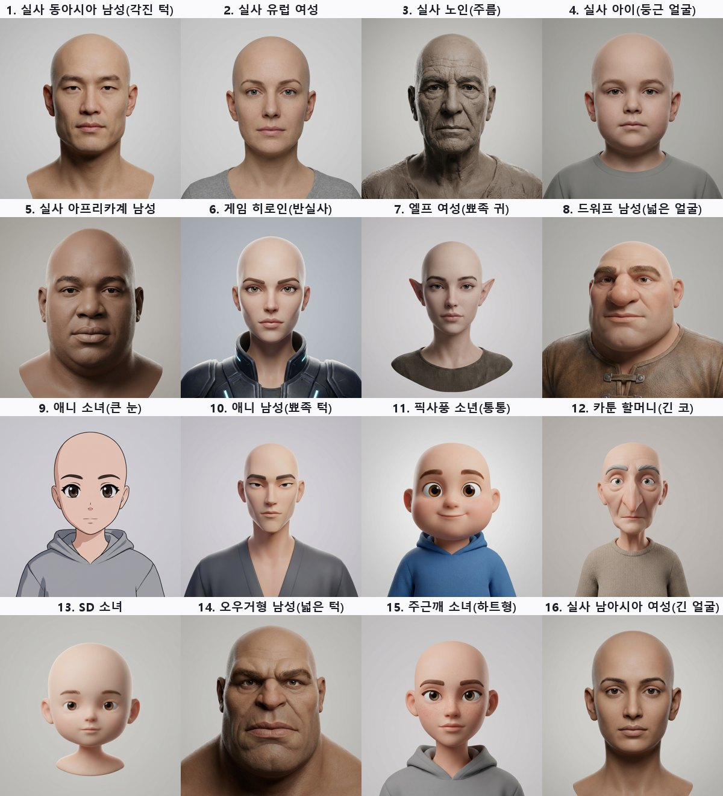
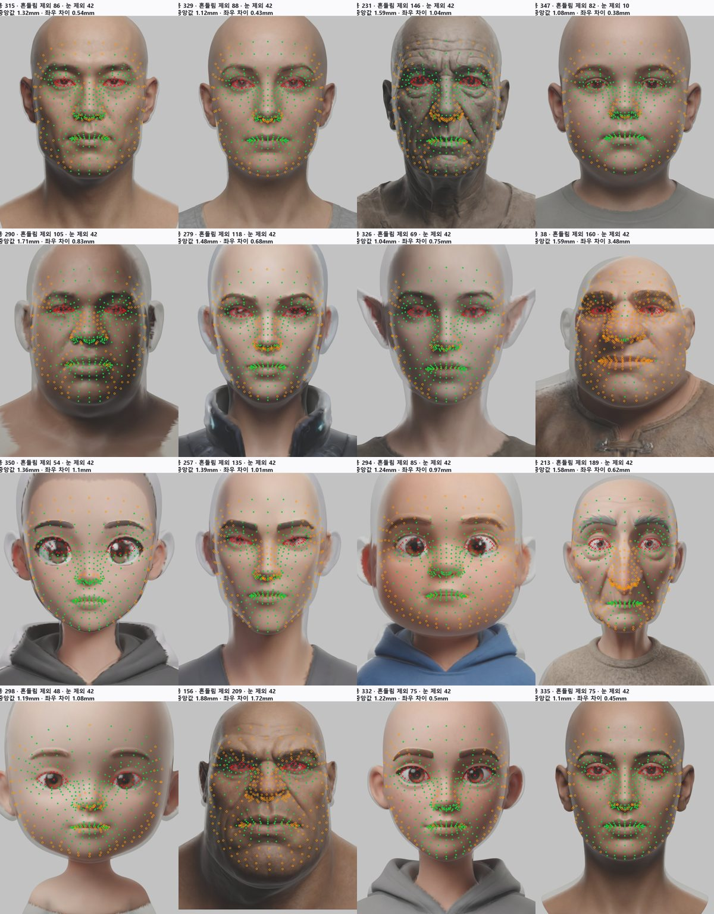
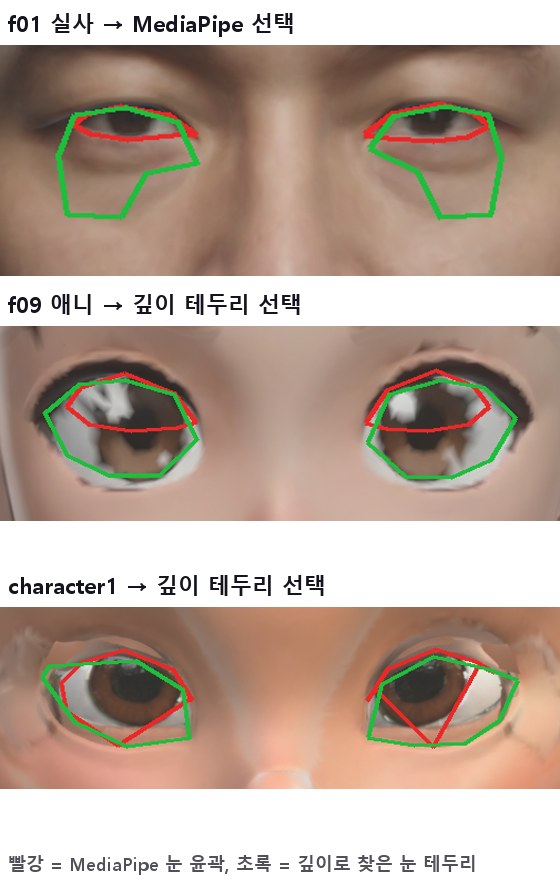
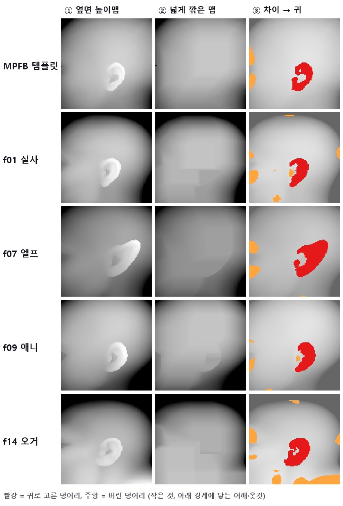
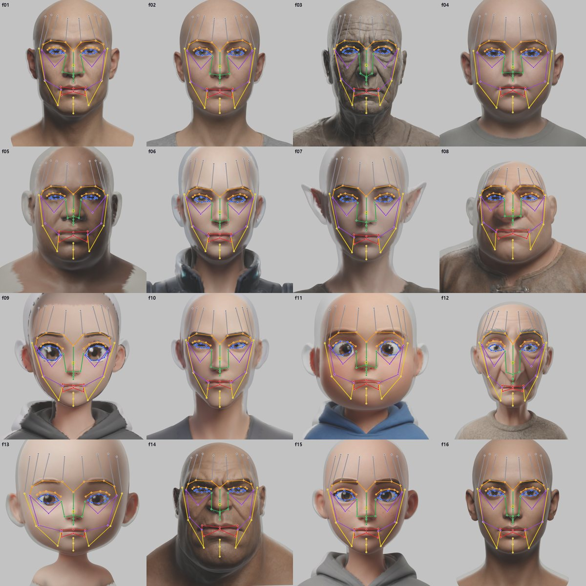
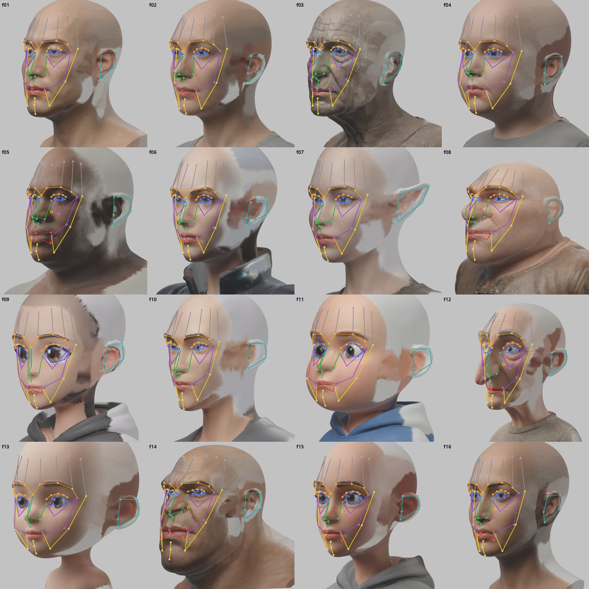
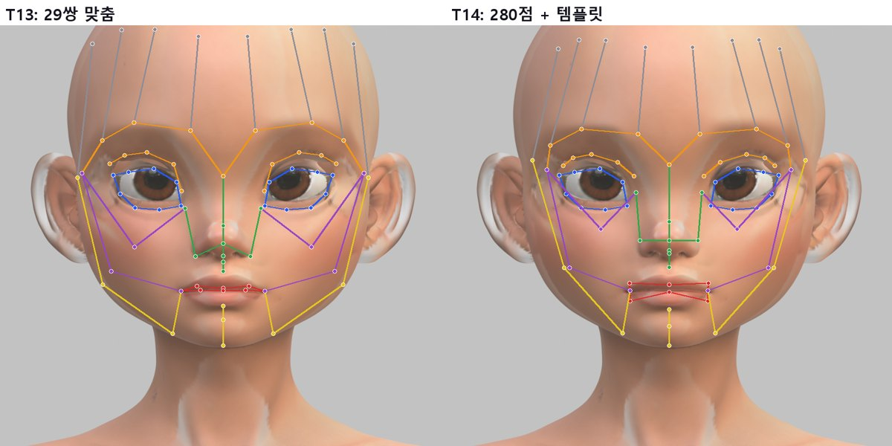
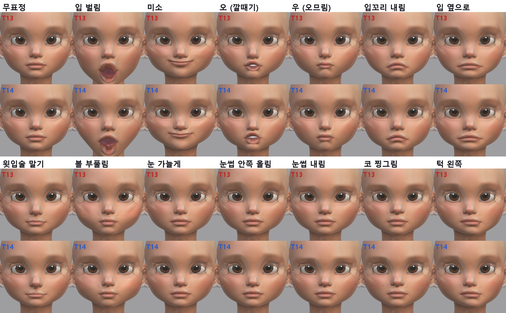
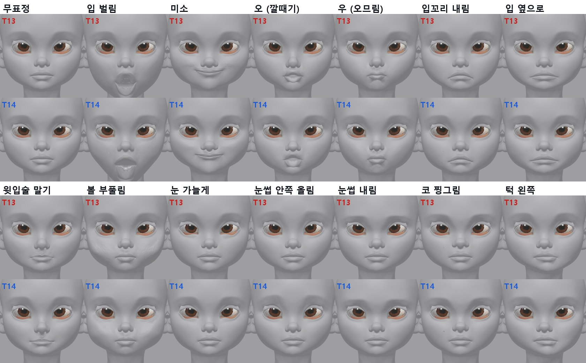

<title>T14 리깅 포인트 자동 배치</title>
<link rel="preconnect" href="https://fonts.googleapis.com">
<link rel="preconnect" href="https://fonts.gstatic.com" crossorigin>
<link rel="stylesheet" href="https://fonts.googleapis.com/css2?family=IBM+Plex+Mono:wght@400;500&family=IBM+Plex+Sans+KR:wght@400;500;600;700&display=swap">
<style>
/* Layout: one reading column; figures full width of the column */
:root{--bg:#F5F6F8;--paper:#fff;--ink:#1B1F27;--muted:#5B6473;--line:#DDE1E8;--soft:#EEF1F6;--accent:#2F5BD3;--good:#1E8A52;--bad:#C83A32;--warn:#B26A00;
--f-body:"IBM Plex Sans KR","Malgun Gothic",system-ui,sans-serif;--f-mono:"IBM Plex Mono",ui-monospace,Consolas,monospace}
@media (prefers-color-scheme: dark){:root:not([data-theme="light"]){--bg:#12151B;--paper:#191D25;--ink:#E5E8EE;--muted:#9BA4B3;--line:#2B313C;--soft:#20252F;--accent:#7FA2FF;--good:#5ACB8C;--bad:#FF6F66;--warn:#F0AE48;color-scheme:dark}}
:root[data-theme="dark"]{--bg:#12151B;--paper:#191D25;--ink:#E5E8EE;--muted:#9BA4B3;--line:#2B313C;--soft:#20252F;--accent:#7FA2FF;--good:#5ACB8C;--bad:#FF6F66;--warn:#F0AE48;color-scheme:dark}
*{box-sizing:border-box}
body{background:var(--bg);color:var(--ink);font-family:var(--f-body);font-size:16px;line-height:1.7}
main{max-width:920px;margin:0 auto;padding-inline:16px;padding-block:26px 60px}
h1{font-size:clamp(25px,4vw,33px);margin:0;line-height:1.25;text-wrap:balance}
.sub{color:var(--muted);margin:6px 0 0}
h2{font-size:21px;margin:38px 0 6px;text-wrap:balance}
h3{font-size:17px;margin:20px 0 4px}
p,ul,ol{max-width:72ch} li{margin:3px 0}
figure{margin:16px 0;background:var(--paper);border:1px solid var(--line);border-radius:12px;padding:12px}
figure img{display:block;width:100%;height:auto;border-radius:6px;background:#2a2a2e}
figure img.narrow{max-width:560px;margin:0 auto}
figure svg{display:block;width:100%;height:auto}
figcaption{font-size:14px;color:var(--muted);margin-top:8px}
figcaption b{color:var(--ink)}
.tbl{overflow-x:auto;margin:12px 0}
table{border-collapse:collapse;font-size:14.5px;min-width:540px;width:100%;background:var(--paper)}
th,td{border:1px solid var(--line);padding:6px 10px;text-align:left;vertical-align:top}
th{background:var(--soft)}
td.num{font-family:var(--f-mono);font-variant-numeric:tabular-nums;white-space:nowrap}
.good{color:var(--good);font-weight:600}.bad{color:var(--bad);font-weight:600}.warn{color:var(--warn);font-weight:600}
.box{background:var(--paper);border:1px solid var(--line);border-left:4px solid var(--accent);border-radius:0 10px 10px 0;padding:12px 16px;margin:14px 0}
code{font-family:var(--f-mono);font-size:13.5px;background:var(--soft);padding:1px 5px;border-radius:4px;overflow-wrap:anywhere}
svg text{font-family:var(--f-body)}
.s-ink{fill:var(--ink)}.s-muted{fill:var(--muted)}.s-paper{fill:var(--paper)}.s-soft{fill:var(--soft)}.s-acc{fill:var(--accent)}.s-good{fill:var(--good)}.s-bad{fill:var(--bad)}
.st-acc{stroke:var(--accent)}.st-good{stroke:var(--good)}.st-ink{stroke:var(--ink)}.st-muted{stroke:var(--muted)}.st-bad{stroke:var(--bad)}
</style>
<main>
<h1>T14 · 리깅 포인트 자동 배치 (어떤 얼굴이든)</h1>
<p class="sub">2026-10-12 · 시험 얼굴 16개(Tripo 240크레딧) + character1 v3 · Blender 4.5 · MediaPipe 478점 · CC0 MPFB 머리 템플릿 · 사람 손 없이 실행</p>
<div class="box"><b>결론</b>
<ul>
<li><b>맞추는 점이 29개에서 얼굴당 190~370개로 늘었습니다.</b> 텍스처 입힌 머리를 5방향에서 찍어 MediaPipe 478점을 찾고, 흔들리는 점을 버린 뒤 좌우 짝으로 평균 냅니다.</li>
<li><b>위치가 약 3배 정확해졌습니다.</b> 점 일부를 숨기고 맞히게 하면 오차 중앙값이 2.5mm → 0.76mm, 95번째 백분위가 약 7mm(최대 17mm) → 약 2.6mm입니다(17개 머리).</li>
<li><b>Rigify 얼굴 관절 92개가 16개 얼굴 모두에 자동으로 놓였습니다.</b> 실사, 노인, 아이, 엘프, 드워프, 오거, 애니, 픽사풍, SD를 포함합니다. 높이 순서 검사는 16/16 통과입니다. 귀 관절은 옆면에서 귀를 직접 찾아 실제 귀 위에 놓입니다(16/16, 엘프 귀 포함).</li>
<li><b>눈꺼풀 고리는 얼굴마다 자동으로 고릅니다.</b> 사람 눈은 MediaPipe 윤곽, 큰 만화 눈은 깊이로 찾은 눈 테두리입니다(애니 f09, 픽사풍 f11, character1).</li>
<li><b>모든 관절이 정확히 좌우 대칭입니다.</b> 원본 메쉬는 바꾸지 않고 회전·이동으로만 똑바로 세웁니다.</li>
<li><b>character1에 적용한 결과</b>: 쉬는 자세 차이는 0.0002mm로 유지됩니다. 42개 표정의 뒤집힌 면은 497 → 330개로 줄었습니다. 입 벌림 모양이 자연스러워지고, 웃음·볼 부풀림의 볼 주름이 줄었습니다(배수 1.0).</li>
</ul></div>

<h2>1. 순서</h2>
<figure>
<svg viewBox="0 0 860 300" role="img" aria-label="T14 순서">
  <g font-size="12.5">
    <rect x="6" y="20" width="196" height="92" rx="8" class="s-paper st-acc" stroke-width="1.5"/><text x="104" y="44" text-anchor="middle" class="s-ink" font-weight="600">① 똑바로 세우기</text><text x="104" y="64" text-anchor="middle" class="s-muted">좌우 짝 점으로 대칭면 계산</text><text x="104" y="82" text-anchor="middle" class="s-muted">회전·이동만 (모양 그대로)</text><text x="104" y="100" text-anchor="middle" class="s-muted">0.6~4.3° 보정</text>
    <rect x="222" y="20" width="196" height="92" rx="8" class="s-paper st-acc" stroke-width="1.5"/><text x="320" y="44" text-anchor="middle" class="s-ink" font-weight="600">② 색 입히기</text><text x="320" y="64" text-anchor="middle" class="s-muted">원본 정면 그림을</text><text x="320" y="82" text-anchor="middle" class="s-muted">얼굴 점에 맞춰 투영</text><text x="320" y="100" text-anchor="middle" class="s-muted">눈썹·입술이 보여야 잘 찾음</text>
    <rect x="438" y="20" width="196" height="92" rx="8" class="s-paper st-acc" stroke-width="1.5"/><text x="536" y="44" text-anchor="middle" class="s-ink" font-weight="600">③ 조밀 점</text><text x="536" y="64" text-anchor="middle" class="s-muted">5방향 렌더 × MediaPipe 478</text><text x="536" y="82" text-anchor="middle" class="s-muted">표면에 쏘기, 3mm 넘게 흔들리면 버림</text><text x="536" y="100" text-anchor="middle" class="s-muted">좌우 짝 평균 → 190~370점</text>
    <rect x="654" y="20" width="200" height="92" rx="8" class="s-paper st-acc" stroke-width="1.5"/><text x="754" y="44" text-anchor="middle" class="s-ink" font-weight="600">④ 템플릿에서 옮기기</text><text x="754" y="64" text-anchor="middle" class="s-muted">MPFB 템플릿의 관절 92개</text><text x="754" y="82" text-anchor="middle" class="s-muted">같은 번호 점끼리 닮음 변환</text><text x="754" y="100" text-anchor="middle" class="s-muted">+ 얇은 판 휨(TPS), 표면에 붙이기</text>
    <rect x="6" y="160" width="410" height="100" rx="8" class="s-paper st-acc" stroke-width="1.5"/><text x="211" y="184" text-anchor="middle" class="s-ink" font-weight="600">⑤ 부위별 보정</text><text x="211" y="204" text-anchor="middle" class="s-muted">눈꺼풀 고리: MediaPipe 윤곽 ↔ 깊이 테두리 자동 선택</text><text x="211" y="222" text-anchor="middle" class="s-muted">입술: 안쪽 입술선 · 귀: 옆면 높이맵에서 찾기 · 턱 축</text><text x="211" y="240" text-anchor="middle" class="s-muted">겹쳐 있던 관절은 함께 이동 · 좌우 평균 → 정확한 대칭</text>
    <rect x="436" y="160" width="418" height="100" rx="8" class="s-paper st-good" stroke-width="2"/><text x="645" y="184" text-anchor="middle" class="s-ink" font-weight="600">⑥ 검사 → 리그 (T13)</text><text x="645" y="204" text-anchor="middle" class="s-muted">높이 순서, 겹친 관절, 정지 자세 차이</text><text x="645" y="222" text-anchor="middle" class="s-muted">rigify_fit에 RIG_POINTS로 넣으면</text><text x="645" y="240" text-anchor="middle" class="s-muted">리그 생성 · 가중치 · 표정 42개 굽기</text>
    <path d="M202 66 H218 M418 66 H434 M634 66 H650 M754 112 V136 H211 V156 M416 210 H432" fill="none" class="st-muted" stroke-width="2"/>
    <text x="6" y="288" class="s-muted">MPFB 템플릿에는 관절 92개를 한 번만 맞춰 두었습니다(같은 방법으로 귀도 찾음). 새 머리는 ①~⑥만 돌립니다.</text>
  </g>
</svg>
<figcaption><b>그림 1.</b> 처리 순서. 이전(T13)에는 ④에서 의미 점 29쌍만 썼고, 귀·볼·이마는 그 29점으로 만든 휨에 끌려가기만 했습니다.</figcaption>
</figure>

<h2>2. 시험 얼굴 16개</h2>
<p>여러 얼굴 형태에서 자동 배치가 버티는지 보려고 Tripo로 16개를 만들었습니다. 생성 하나에 15크레딧씩 240크레딧을 썼습니다(허용 500). 모두 대머리로 요청해 머리카락이 얼굴 점을 가리지 않게 했습니다. 7개는 전신으로 나와서 머리만 잘라 썼습니다.</p>
<figure><figcaption><b>그림 2.</b> 시험 얼굴 16개의 정면 원본 그림. 실사(f01~f05, f16), 세미리얼(f06, f15), 판타지(f07 엘프, f08 드워프, f14 오거), 애니(f09, f10), 픽사풍(f11), 카툰(f12), SD(f13).</figcaption></figure>

<h2>3. 조밀 점 찾기</h2>
<ol>
<li><b>똑바로 세우기</b>: Tripo 머리는 몇 도 돌아 나오기도 합니다. 정면 렌더에서 MediaPipe 점을 찾아 메쉬에 쏘고, 좌우 짝 점(번호로 정한 219쌍)의 차이 방향으로 대칭면을 구해 그 면이 x = 0이 되게 돌립니다. 두 번 반복합니다. 모양은 바꾸지 않습니다.</li>
<li><b>색 입히기</b>: 시험 머리에는 텍스처가 없어서 원본 정면 그림을 투영했습니다. 회색 머리보다 눈썹·입술 위치를 훨씬 잘 찾습니다.</li>
<li><b>5방향 측정</b>: 정면, 좌우 10°, 위아래 5°로 렌더해 각각 478점을 찾고 표면에 쏩니다. 점마다 5개의 중앙값을 쓰고, 방향에 따라 3mm 넘게 흔들리면 버립니다.</li>
<li><b>눈 점 검사</b>: 만화 눈에서는 MediaPipe가 큰 눈 안에 사람 크기 눈을 그립니다. 눈 점이 깊이로 찾은 눈 테두리에서 2mm 넘게 떨어지면 조밀 점에서 뺍니다(눈꺼풀은 5장에서 따로 정함).</li>
<li><b>대칭</b>: 짝 점을 평균 내고 다시 표면에 붙입니다. 가운데 점은 x = 0에 둡니다.</li>
</ol>
<figure><figcaption><b>그림 3.</b> 16개 얼굴에서 남은 조밀 점. 주름이 깊은 f03·f12, 과장된 f08·f14는 흔들리는 점이 많아 190~230개만 남고, 매끈한 얼굴은 330~370개가 남습니다.</figcaption></figure>

<h2>4. 템플릿에서 옮기기, 그리고 정확도</h2>
<p>CC0 MPFB 머리 템플릿에 Rigify 얼굴 관절 92개를 한 번 맞춰 두었습니다. 템플릿에서도 같은 MediaPipe 점을 찾아 두었기 때문에, 새 머리와는 같은 번호끼리 짝이 생깁니다. 이 짝으로 먼저 크기·회전·위치를 맞추고, 남은 차이는 얇은 판 휨(TPS)으로 공간을 부드럽게 휘어서 관절을 옮깁니다. 피부 관절은 표면에 붙입니다.</p>
<p><b>정확도 측정</b>: 각 머리에서 조밀 점 일부를 숨기고, 나머지로 만든 휨이 숨긴 점을 얼마나 맞히는지 쟀습니다. 관절은 점 사이에 놓이므로, 점 사이를 얼마나 잘 따라가는지가 곧 관절 위치의 정확도입니다.</p>
<ul>
<li><b>이전 방식</b>: 의미 점 28개(눈 윤곽 16, 눈썹 6, 코끝, 입꼬리 2, 입술 가운데 2, 턱 끝)로 휨을 만들고 나머지 점 전부를 예측합니다.</li>
<li><b>새 방식</b>: 점을 5묶음으로 나눠, 4묶음으로 휨을 만들고 남은 1묶음을 예측합니다(5겹 교차 검증).</li>
</ul>
<figure><svg viewBox="0 0 860 444" role="img" aria-label="숨긴 점 예측 오차">
<g font-size="12.5">
<text x="200" y="16" class="s-muted">숨긴 점의 위치 예측 오차 중앙값 (mm) · 가는 선 = 95번째 백분위 (8mm 넘으면 잘림)</text>
<text x="192" y="44" text-anchor="end" class="s-ink">f01_eastasian_man</text>
<rect x="200" y="32" width="145.5" height="7" rx="2" class="s-bad"/>
<line x1="345.5" y1="35.5" x2="634.2" y2="35.5" class="st-bad" stroke-width="1.2"/>
<rect x="200" y="41" width="60.8" height="7" rx="2" class="s-acc"/>
<line x1="260.8" y1="44.5" x2="392.0" y2="44.5" class="st-acc" stroke-width="1.2"/>
<text x="856" y="44" text-anchor="end" class="s-muted" font-family="IBM Plex Mono, monospace">1.9 → 0.81</text>
<text x="192" y="66" text-anchor="end" class="s-ink">f02_european_woman</text>
<rect x="200" y="54" width="180.0" height="7" rx="2" class="s-bad"/>
<line x1="380.0" y1="57.5" x2="678.5" y2="57.5" class="st-bad" stroke-width="1.2"/>
<rect x="200" y="63" width="57.0" height="7" rx="2" class="s-acc"/>
<line x1="257.0" y1="66.5" x2="365.0" y2="66.5" class="st-acc" stroke-width="1.2"/>
<text x="856" y="66" text-anchor="end" class="s-muted" font-family="IBM Plex Mono, monospace">2.4 → 0.76</text>
<text x="192" y="88" text-anchor="end" class="s-ink">f03_elderly_man</text>
<rect x="200" y="76" width="226.5" height="7" rx="2" class="s-bad"/>
<line x1="426.5" y1="79.5" x2="800.0" y2="79.5" class="st-bad" stroke-width="1.2"/>
<rect x="200" y="85" width="84.8" height="7" rx="2" class="s-acc"/>
<line x1="284.8" y1="88.5" x2="454.2" y2="88.5" class="st-acc" stroke-width="1.2"/>
<text x="856" y="88" text-anchor="end" class="s-muted" font-family="IBM Plex Mono, monospace">3.0 → 1.13</text>
<text x="192" y="110" text-anchor="end" class="s-ink">f04_child</text>
<rect x="200" y="98" width="162.0" height="7" rx="2" class="s-bad"/>
<line x1="362.0" y1="101.5" x2="800.0" y2="101.5" class="st-bad" stroke-width="1.2"/>
<rect x="200" y="107" width="52.5" height="7" rx="2" class="s-acc"/>
<line x1="252.5" y1="110.5" x2="359.8" y2="110.5" class="st-acc" stroke-width="1.2"/>
<text x="856" y="110" text-anchor="end" class="s-muted" font-family="IBM Plex Mono, monospace">2.2 → 0.70</text>
<text x="192" y="132" text-anchor="end" class="s-ink">f05_african_man</text>
<rect x="200" y="120" width="201.0" height="7" rx="2" class="s-bad"/>
<line x1="401.0" y1="123.5" x2="736.2" y2="123.5" class="st-bad" stroke-width="1.2"/>
<rect x="200" y="129" width="59.2" height="7" rx="2" class="s-acc"/>
<line x1="259.2" y1="132.5" x2="385.2" y2="132.5" class="st-acc" stroke-width="1.2"/>
<text x="856" y="132" text-anchor="end" class="s-muted" font-family="IBM Plex Mono, monospace">2.7 → 0.79</text>
<text x="192" y="154" text-anchor="end" class="s-ink">f06_game_heroine</text>
<rect x="200" y="142" width="183.8" height="7" rx="2" class="s-bad"/>
<line x1="383.8" y1="145.5" x2="701.0" y2="145.5" class="st-bad" stroke-width="1.2"/>
<rect x="200" y="151" width="60.8" height="7" rx="2" class="s-acc"/>
<line x1="260.8" y1="154.5" x2="395.0" y2="154.5" class="st-acc" stroke-width="1.2"/>
<text x="856" y="154" text-anchor="end" class="s-muted" font-family="IBM Plex Mono, monospace">2.5 → 0.81</text>
<text x="192" y="176" text-anchor="end" class="s-ink">f07_elf_woman</text>
<rect x="200" y="164" width="131.2" height="7" rx="2" class="s-bad"/>
<line x1="331.2" y1="167.5" x2="590.0" y2="167.5" class="st-bad" stroke-width="1.2"/>
<rect x="200" y="173" width="46.5" height="7" rx="2" class="s-acc"/>
<line x1="246.5" y1="176.5" x2="344.8" y2="176.5" class="st-acc" stroke-width="1.2"/>
<text x="856" y="176" text-anchor="end" class="s-muted" font-family="IBM Plex Mono, monospace">1.8 → 0.62</text>
<text x="192" y="198" text-anchor="end" class="s-ink">f08_dwarf_man</text>
<rect x="200" y="186" width="315.8" height="7" rx="2" class="s-bad"/>
<line x1="515.8" y1="189.5" x2="800.0" y2="189.5" class="st-bad" stroke-width="1.2"/>
<rect x="200" y="195" width="103.5" height="7" rx="2" class="s-acc"/>
<line x1="303.5" y1="198.5" x2="498.5" y2="198.5" class="st-acc" stroke-width="1.2"/>
<text x="856" y="198" text-anchor="end" class="s-muted" font-family="IBM Plex Mono, monospace">4.2 → 1.38</text>
<text x="192" y="220" text-anchor="end" class="s-ink">f09_anime_girl</text>
<rect x="200" y="208" width="186.8" height="7" rx="2" class="s-bad"/>
<line x1="386.8" y1="211.5" x2="608.0" y2="211.5" class="st-bad" stroke-width="1.2"/>
<rect x="200" y="217" width="53.2" height="7" rx="2" class="s-acc"/>
<line x1="253.2" y1="220.5" x2="417.5" y2="220.5" class="st-acc" stroke-width="1.2"/>
<text x="856" y="220" text-anchor="end" class="s-muted" font-family="IBM Plex Mono, monospace">2.5 → 0.71</text>
<text x="192" y="242" text-anchor="end" class="s-ink">f10_anime_man</text>
<rect x="200" y="230" width="156.0" height="7" rx="2" class="s-bad"/>
<line x1="356.0" y1="233.5" x2="765.5" y2="233.5" class="st-bad" stroke-width="1.2"/>
<rect x="200" y="239" width="57.0" height="7" rx="2" class="s-acc"/>
<line x1="257.0" y1="242.5" x2="366.5" y2="242.5" class="st-acc" stroke-width="1.2"/>
<text x="856" y="242" text-anchor="end" class="s-muted" font-family="IBM Plex Mono, monospace">2.1 → 0.76</text>
<text x="192" y="264" text-anchor="end" class="s-ink">f11_pixar_boy</text>
<rect x="200" y="252" width="259.5" height="7" rx="2" class="s-bad"/>
<line x1="459.5" y1="255.5" x2="800.0" y2="255.5" class="st-bad" stroke-width="1.2"/>
<rect x="200" y="261" width="51.0" height="7" rx="2" class="s-acc"/>
<line x1="251.0" y1="264.5" x2="381.5" y2="264.5" class="st-acc" stroke-width="1.2"/>
<text x="856" y="264" text-anchor="end" class="s-muted" font-family="IBM Plex Mono, monospace">3.5 → 0.68</text>
<text x="192" y="286" text-anchor="end" class="s-ink">f12_cartoon_old_woman</text>
<rect x="200" y="274" width="313.5" height="7" rx="2" class="s-bad"/>
<line x1="513.5" y1="277.5" x2="800.0" y2="277.5" class="st-bad" stroke-width="1.2"/>
<rect x="200" y="283" width="91.5" height="7" rx="2" class="s-acc"/>
<line x1="291.5" y1="286.5" x2="527.0" y2="286.5" class="st-acc" stroke-width="1.2"/>
<text x="856" y="286" text-anchor="end" class="s-muted" font-family="IBM Plex Mono, monospace">4.2 → 1.22</text>
<text x="192" y="308" text-anchor="end" class="s-ink">f13_chibi_girl</text>
<rect x="200" y="296" width="228.8" height="7" rx="2" class="s-bad"/>
<line x1="428.8" y1="299.5" x2="800.0" y2="299.5" class="st-bad" stroke-width="1.2"/>
<rect x="200" y="305" width="50.2" height="7" rx="2" class="s-acc"/>
<line x1="250.2" y1="308.5" x2="360.5" y2="308.5" class="st-acc" stroke-width="1.2"/>
<text x="856" y="308" text-anchor="end" class="s-muted" font-family="IBM Plex Mono, monospace">3.0 → 0.67</text>
<text x="192" y="330" text-anchor="end" class="s-ink">f14_ogre_man</text>
<rect x="200" y="318" width="270.8" height="7" rx="2" class="s-bad"/>
<line x1="470.8" y1="321.5" x2="800.0" y2="321.5" class="st-bad" stroke-width="1.2"/>
<rect x="200" y="327" width="117.8" height="7" rx="2" class="s-acc"/>
<line x1="317.8" y1="330.5" x2="625.2" y2="330.5" class="st-acc" stroke-width="1.2"/>
<text x="856" y="330" text-anchor="end" class="s-muted" font-family="IBM Plex Mono, monospace">3.6 → 1.57</text>
<text x="192" y="352" text-anchor="end" class="s-ink">f15_freckle_girl</text>
<rect x="200" y="340" width="190.5" height="7" rx="2" class="s-bad"/>
<line x1="390.5" y1="343.5" x2="686.0" y2="343.5" class="st-bad" stroke-width="1.2"/>
<rect x="200" y="349" width="59.2" height="7" rx="2" class="s-acc"/>
<line x1="259.2" y1="352.5" x2="408.5" y2="352.5" class="st-acc" stroke-width="1.2"/>
<text x="856" y="352" text-anchor="end" class="s-muted" font-family="IBM Plex Mono, monospace">2.5 → 0.79</text>
<text x="192" y="374" text-anchor="end" class="s-ink">f16_south_asian_woman</text>
<rect x="200" y="362" width="186.0" height="7" rx="2" class="s-bad"/>
<line x1="386.0" y1="365.5" x2="695.8" y2="365.5" class="st-bad" stroke-width="1.2"/>
<rect x="200" y="371" width="51.0" height="7" rx="2" class="s-acc"/>
<line x1="251.0" y1="374.5" x2="437.8" y2="374.5" class="st-acc" stroke-width="1.2"/>
<text x="856" y="374" text-anchor="end" class="s-muted" font-family="IBM Plex Mono, monospace">2.5 → 0.68</text>
<text x="192" y="396" text-anchor="end" class="s-ink">character1</text>
<rect x="200" y="384" width="207.8" height="7" rx="2" class="s-bad"/>
<line x1="407.8" y1="387.5" x2="749.8" y2="387.5" class="st-bad" stroke-width="1.2"/>
<rect x="200" y="393" width="54.0" height="7" rx="2" class="s-acc"/>
<line x1="254.0" y1="396.5" x2="453.5" y2="396.5" class="st-acc" stroke-width="1.2"/>
<text x="856" y="396" text-anchor="end" class="s-muted" font-family="IBM Plex Mono, monospace">2.8 → 0.72</text>
<text x="200" y="418" text-anchor="middle" class="s-muted">0</text>
<text x="350" y="418" text-anchor="middle" class="s-muted">2</text>
<text x="500" y="418" text-anchor="middle" class="s-muted">4</text>
<text x="650" y="418" text-anchor="middle" class="s-muted">6</text>
<text x="800" y="418" text-anchor="middle" class="s-muted">8</text>
<rect x="200" y="428" width="12" height="8" class="s-bad"/><text x="218" y="436" class="s-ink">이전 방식: 의미 점 28개로 맞춤</text>
<rect x="460" y="428" width="12" height="8" class="s-acc"/><text x="478" y="436" class="s-ink">새 방식: 조밀 점 전부 (5겹 교차 검증)</text>
</g></svg>
<figcaption><b>그림 4.</b> 숨긴 점 예측 오차. 굵은 막대는 중앙값, 가는 선은 95번째 백분위까지입니다(8mm에서 자름). 오른쪽 숫자는 이전 → 새 중앙값(mm)입니다. 17개 머리의 중앙값은 2.5mm → 0.76mm입니다. 이전 방식은 볼·턱선·이마처럼 의미 점에서 먼 곳에서 크게 틀렸습니다(드워프 f08 최대 17mm, 오거 f14 15mm).</figcaption></figure>

<h2>5. 부위별 보정</h2>
<h3>눈꺼풀 고리 (눈마다 8점)</h3>
<p>후보가 두 개이고, 각각 맞는 눈이 다릅니다.</p>
<div class="tbl"><table>
<tr><th>후보</th><th>잘 맞는 눈</th><th>틀리는 경우</th></tr>
<tr><td>MediaPipe 눈 윤곽</td><td>사람 눈 (가늘고 긴 눈)</td><td>큰 만화 눈 안에 작은 사람 눈을 그리거나 V자로 꺾임</td></tr>
<tr><td>깊이로 찾은 눈 테두리 (눈 주변에서 처음 깊이가 꺾이는 곳)</td><td>큰 만화 눈, 잘린 눈 구멍</td><td>조각된 사람 눈에서 눈 밑 주름까지 떠돎</td></tr>
</table></div>
<p>자동 선택 규칙입니다(두 눈은 같은 쪽을 씁니다).</p>
<ol>
<li>쓸 수 있는 고리: 볼록하고, 가로/세로 비율이 1.2~6이어야 합니다. 깊이 테두리는 눈썹보다 아래에 있어야 하고, 20% 넓혔을 때 MediaPipe 눈의 60% 이상을 품어야 합니다.</li>
<li>MediaPipe 눈의 가로/세로 비율이 2.6 이상이면 사람 눈으로 보고 MediaPipe를 씁니다.</li>
<li>그렇지 않고 깊이 테두리가 MediaPipe 눈보다 1.6배 이상 넓으면 만화 눈으로 보고 깊이 테두리를 씁니다.</li>
<li>둘 다 아니면 쓸 수 있는 쪽을 쓰고, 둘 다 못 쓰면 템플릿에서 옮긴 고리를 씁니다.</li>
</ol>
<figure><figcaption><b>그림 5.</b> 빨강 MediaPipe, 초록 깊이 테두리. f01은 깊이 테두리가 눈 밑 주름까지 내려가서 MediaPipe를 골랐습니다. f09는 MediaPipe가 큰 눈 안에 작은 눈을 그려 깊이 테두리를 골랐습니다. character1은 MediaPipe가 V자로 꺾이고, 깊이 테두리가 실제 눈 절단선과 거의 겹칩니다.</figcaption></figure>
<h3>입술, 턱, 대칭, 겹친 관절</h3>
<ul>
<li><b>입술</b>: 입꼬리는 안쪽 입술선의 끝(MediaPipe 78/308)에, 윗·아랫입술 가운데는 입술선(13/14)의 3.5mm 위·아래에 놓습니다.</li>
<li><b>턱 축</b>: 템플릿의 입 벌림(jawOpen) 모양에서 회전축을 풀어 두고, 그 축을 관절처럼 옮깁니다.</li>
<li><b>겹친 관절</b>: 메타리그에서 한 점을 여러 뼈가 같이 씁니다. 예를 들어 입꼬리는 윗입술·아랫입술·턱 옆·볼 아래, 4개 뼈의 끝입니다. 한 뼈만 옮기면 나머지 뼈가 쉬는 자세에서도 돌아갑니다. 그래서 보정한 끝을 같은 점을 쓰던 다른 끝에도 똑같이 적용합니다.</li>
<li><b>대칭</b>: 왼쪽·오른쪽 관절을 거울로 평균 내고, 가운데 관절은 x = 0에 둡니다.</li>
</ul>
<h3>귀</h3>
<p>MediaPipe 점은 귀 앞에서 끝나서, 휨만으로는 귀 관절이 귀보다 약 2cm 앞(관자놀이)에 떨어졌습니다. 그래서 귀를 직접 찾습니다.</p>
<ol>
<li>눈꼬리 뒤부터 머리 옆을 옆쪽 광선으로 찍어 높이맵을 만듭니다(어떤 메쉬 밀도에서도 됨).</li>
<li>그 높이맵을 얼굴 높이의 35% 크기 사각형으로 깎아(열림 연산) 머리통만 남깁니다.</li>
<li>원래 맵과 깎은 맵의 차이가 얼굴 높이의 3.5%를 넘는 덩어리 중 가장 강한 것을 귀로 고릅니다. 아래 경계에 닿는 덩어리(어깨, 옷깃)는 버립니다.</li>
<li>메타리그의 귀 고리 5점을 귀 상자 안에 비율대로 놓고, 귀 표면에 붙입니다.</li>
</ol>
<figure><figcaption><b>그림 6.</b> 귀 찾기. 템플릿, 사람, 뾰족한 엘프 귀, 애니, 오거 모두 귀 덩어리 하나가 잡힙니다. 처음에는 아래 범위를 턱 끝까지 잡아서 후드·어깨가 있는 4개(f06, f08, f09, f11)에서 어깨를 귀로 골랐습니다. 아래 범위를 입 높이로 올리고, 아래 경계에 닿는 덩어리를 버려서 해결했습니다. 찾은 귀 높이는 55~69mm, 엘프는 68~69mm입니다.</figcaption></figure>

<h2>6. 16개 얼굴 결과</h2>
<figure><figcaption><b>그림 7.</b> 정면. 파랑 눈꺼풀, 주황 눈썹, 빨강 입술, 초록 코, 보라 볼, 노랑 턱, 회색 이마. 큰 눈(f09, f11)은 눈 테두리 전체를, 가는 눈은 눈꺼풀 선을 따라갑니다.</figcaption></figure>
<figure><figcaption><b>그림 8.</b> 3/4 뷰. 모든 관절이 표면 위에 있고, 귀 고리(청록)가 실제 귀 위에 놓입니다. 머리 뒤쪽 흰 부분은 정면 그림 한 장으로 색을 입혀 생긴 빈 곳입니다(관절 배치와는 무관).</figcaption></figure>
<div class="tbl"><table>
<tr><th>얼굴</th><th>조밀 점</th><th>흔들림 중앙값</th><th>대칭 강제 전 좌우 차이</th><th>기울기 보정</th><th>눈꺼풀 고리</th><th>귀 높이</th><th>숨긴 점 오차 (이전 → 새)</th><th>순서</th></tr>
<tr><td>f01 동아시아 남성</td><td class="num">335</td><td class="num">1.31mm</td><td class="num">1.22mm</td><td class="num">0.8°</td><td>MediaPipe</td><td class="num">60mm</td><td class="num">1.94 → <span class="good">0.81</span>mm</td><td class="good">통과</td></tr>
<tr><td>f02 유럽 여성</td><td class="num">326</td><td class="num">1.03mm</td><td class="num">0.92mm</td><td class="num">1.0°</td><td>MediaPipe</td><td class="num">61mm</td><td class="num">2.40 → <span class="good">0.76</span>mm</td><td class="good">통과</td></tr>
<tr><td>f03 노인 남성</td><td class="num">228</td><td class="num">1.59mm</td><td class="num">4.78mm</td><td class="num">4.2°</td><td>MediaPipe</td><td class="num">67mm</td><td class="num">3.02 → <span class="good">1.13</span>mm</td><td class="good">통과</td></tr>
<tr><td>f04 아이</td><td class="num">342</td><td class="num">1.04mm</td><td class="num">0.86mm</td><td class="num">1.0°</td><td>MediaPipe</td><td class="num">59mm</td><td class="num">2.16 → <span class="good">0.70</span>mm</td><td class="good">통과</td></tr>
<tr><td>f05 아프리카계 남성</td><td class="num">293</td><td class="num">1.72mm</td><td class="num">1.04mm</td><td class="num">1.8°</td><td>MediaPipe</td><td class="num">64mm</td><td class="num">2.68 → <span class="good">0.79</span>mm</td><td class="good">통과</td></tr>
<tr><td>f06 게임 여주인공</td><td class="num">316</td><td class="num">1.49mm</td><td class="num">1.42mm</td><td class="num">2.4°</td><td>MediaPipe</td><td class="num">57mm</td><td class="num">2.45 → <span class="good">0.81</span>mm</td><td class="good">통과</td></tr>
<tr><td>f07 엘프 여성</td><td class="num">342</td><td class="num">1.02mm</td><td class="num">1.84mm</td><td class="num">1.8°</td><td>MediaPipe</td><td class="num">68mm</td><td class="num">1.75 → <span class="good">0.62</span>mm</td><td class="good">통과</td></tr>
<tr><td>f08 드워프</td><td class="num">215</td><td class="num">1.75mm</td><td class="num">10.64mm</td><td class="num">1.7°</td><td>MediaPipe</td><td class="num">62mm</td><td class="num">4.21 → <span class="good">1.38</span>mm</td><td class="good">통과</td></tr>
<tr><td>f09 애니 소녀</td><td class="num">367</td><td class="num">1.29mm</td><td class="num">1.88mm</td><td class="num">1.4°</td><td><b>깊이 테두리</b></td><td class="num">57mm</td><td class="num">2.49 → <span class="good">0.71</span>mm</td><td class="good">통과</td></tr>
<tr><td>f10 애니 남성</td><td class="num">288</td><td class="num">1.35mm</td><td class="num">2.23mm</td><td class="num">1.0°</td><td>MediaPipe</td><td class="num">57mm</td><td class="num">2.08 → <span class="good">0.76</span>mm</td><td class="good">통과</td></tr>
<tr><td>f11 픽사풍 소년</td><td class="num">308</td><td class="num">1.37mm</td><td class="num">2.75mm</td><td class="num">1.2°</td><td><b>깊이 테두리</b></td><td class="num">59mm</td><td class="num">3.46 → <span class="good">0.68</span>mm</td><td class="good">통과</td></tr>
<tr><td>f12 카툰 할머니</td><td class="num">219</td><td class="num">1.57mm</td><td class="num">1.34mm</td><td class="num">2.4°</td><td>MediaPipe</td><td class="num">58mm</td><td class="num">4.18 → <span class="good">1.22</span>mm</td><td class="good">통과</td></tr>
<tr><td>f13 SD 소녀</td><td class="num">364</td><td class="num">1.24mm</td><td class="num">1.59mm</td><td class="num">0.6°</td><td>MediaPipe</td><td class="num">56mm</td><td class="num">3.05 → <span class="good">0.67</span>mm</td><td class="good">통과</td></tr>
<tr><td>f14 오거</td><td class="num">192</td><td class="num">1.88mm</td><td class="num">2.45mm</td><td class="num">1.6°</td><td>MediaPipe</td><td class="num">69mm</td><td class="num">3.61 → <span class="good">1.57</span>mm</td><td class="good">통과</td></tr>
<tr><td>f15 주근깨 소녀</td><td class="num">332</td><td class="num">1.32mm</td><td class="num">2.00mm</td><td class="num">1.5°</td><td>MediaPipe</td><td class="num">56mm</td><td class="num">2.54 → <span class="good">0.79</span>mm</td><td class="good">통과</td></tr>
<tr><td>f16 남아시아 여성</td><td class="num">345</td><td class="num">1.08mm</td><td class="num">0.68mm</td><td class="num">1.0°</td><td>MediaPipe</td><td class="num">59mm</td><td class="num">2.48 → <span class="good">0.68</span>mm</td><td class="good">통과</td></tr>
<tr><td><b>character1 v3</b></td><td class="num">280</td><td class="num">1.88mm</td><td class="num">1.38mm</td><td class="num">—</td><td><b>깊이 테두리</b></td><td class="num">63mm</td><td class="num">2.77 → <span class="good">0.72</span>mm</td><td class="good">통과</td></tr>
</table></div>
<p>좌우 차이는 대칭을 강제하기 전 짝 점의 거울 거리입니다. 드워프 f08(10.6mm)과 노인 f03(4.8mm)은 Tripo가 만든 얼굴 자체가 비대칭이고, 관절은 평균으로 대칭이 됩니다.</p>

<h2>7. character1에 적용</h2>
<p><code>rigify_fit.py</code>에 <code>RIG_POINTS</code>로 이 결과를 넣었습니다. 얼굴 관절 92개는 새 배치를 쓰고, 이미 잘라 둔 눈 구멍(눈꺼풀 고리), 눈알, 턱 축, 이, 혀는 T1·T2 부품에서 그대로 가져옵니다. 표정은 템플릿 크기 그대로(1.0배) 구웠습니다.</p>
<figure><figcaption><b>그림 9.</b> character1 최종 관절. 이전에는 코 날개 관절이 눈 안쪽 아래까지 벌어졌고, 볼·턱선이 의미 점에 끌려 비뚤었습니다. 새 배치는 코 관절이 콧방울에, 입꼬리가 입술 끝에 놓이고, 눈꺼풀은 두 리그 모두 실제 눈 절단선(T1)을 씁니다.</figcaption></figure>
<figure><figcaption><b>그림 10.</b> 표정 14개, 원본 텍스처(위 T13, 아래 T14). 입 벌림이 O자로 오므라들던 것이 옆으로 자연스럽게 벌어지고, 웃음이 입꼬리에서 올라갑니다. 눈 감기는 두 리그 모두 T1 눈꺼풀 부품이 맡아서 이 비교에서 빼고 "눈 가늘게"로 바꿨습니다.</figcaption></figure>
<figure><figcaption><b>그림 11.</b> 같은 표정의 회색 렌더(모양만 보기). 이전 리그의 웃음에 생기던 볼의 깊은 주름, 볼 부풀림의 울퉁불퉁함, 오므리기의 턱 움푹 패임이 줄었습니다.</figcaption></figure>
<div class="tbl"><table>
<tr><th>검사 (표정 42개)</th><th>T13 (29쌍)</th><th>T14 (조밀 점)</th></tr>
<tr><td>쉬는 자세 원본 차이</td><td class="num">0.0002mm</td><td class="num good">0.0002mm</td></tr>
<tr><td>뒤집힌 면 합계</td><td class="num">497</td><td class="num good">330</td></tr>
<tr><td>10개 넘는 표정</td><td class="num">mouthClose 298, mouthRollUpper 75, jawOpen 64, mouthSmileRight 18</td><td class="num">mouthClose 159, jawOpen 64, <span class="warn">mouthFunnel 38</span>, mouthRollUpper 17, mouthSmileRight 16</td></tr>
<tr><td>조종 뼈 목표 오차 (중앙값 / 최대)</td><td class="num">0.52 / 3.23mm</td><td class="num good">0.42 / 2.72mm</td></tr>
<tr><td>좌우 대칭 (거울 비교 95%, 움직임 대비)</td><td class="num">2.0~56%</td><td class="num">2.1~59% (eyeWide만 큼, 이전과 같음)</td></tr>
<tr><td>가중치 없는 점</td><td class="num">0</td><td class="num">0</td></tr>
</table></div>

<h2>8. 막힌 것과 해결</h2>
<ul>
<li><b>사람 눈에서 깊이 테두리가 떠돎</b>(f01): 눈 밑 주름까지 내려가 세로로 긴 고리가 됐습니다. MediaPipe 눈이 가늘면(비율 2.6 이상) MediaPipe를 먼저 쓰게 했습니다.</li>
<li><b>MediaPipe 눈이 너무 가늘어 탈락</b>(f05, 비율 5.15): 허용 비율을 5에서 6으로 넓혔습니다.</li>
<li><b>character1의 깊이 테두리 탈락</b>: 깊이 테두리와 MediaPipe 눈의 크기가 비슷해서 "품는가" 검사가 경계에서 12%만 통과했습니다. 깊이 테두리를 20% 넓혀서 검사하게 했습니다.</li>
<li><b>귀가 어깨로 잡힘</b>(4개): 6장 그림 6 설명 참고.</li>
<li><b>템플릿에서 귀를 못 찾음</b>: 템플릿 메쉬가 4,308점밖에 안 돼 점 기반 높이맵에 구멍이 났습니다. 옆쪽 광선 방식으로 바꿨습니다.</li>
<li><b>쉬는 자세에서 2.25mm 움직임</b>: 입꼬리 관절을 윗·아랫입술 뼈에만 옮겨서, 같은 점을 쓰던 턱 옆 뼈(chin.L/R)가 쉬는 자세에서도 크게 돌아 있었습니다. 겹친 관절을 함께 옮기게 하자 0.0002mm로 돌아왔습니다.</li>
<li><b>여러 개를 동시에 렌더하다 Blender가 멈춤</b>(f04 한 번): 동시 실행을 4개에서 3개로 줄이고 다시 돌렸습니다.</li>
</ul>

<h2>9. 평가</h2>
<div class="tbl"><table>
<tr><th>잘 되는 것</th><th>부족한 것</th></tr>
<tr><td>
<ul>
<li>16가지 얼굴 형태에서 사람 손 없이 관절 92개 배치</li>
<li>맞추는 점 29 → 190~370개, 위치 오차 약 3배 감소</li>
<li>눈 종류(사람 / 만화)를 스스로 판단</li>
<li>귀를 직접 찾음 (뾰족 귀 포함)</li>
<li>정확한 좌우 대칭, 원본 모양 유지</li>
<li>character1 리그와 바로 이어짐, 표정 품질도 좋아짐</li>
</ul></td><td>
<ul>
<li>시험 머리 16개는 아직 눈·입을 자르지 않아 표정까지는 못 봄</li>
<li>주름이 깊거나 과장된 얼굴은 조밀 점이 190~230개로 적음</li>
<li>mouthFunnel 뒤집힌 면 증가(9 → 38, 입술 경계)</li>
<li>눈썹 그림이 없는 머리에서는 눈썹 점이 약함</li>
<li>관절 수는 Rigify 표준 92개 그대로 (더 촘촘한 입술·볼 뼈는 아직 없음)</li>
</ul></td></tr>
</table></div>

<h2>10. 다음 단계</h2>
<ul>
<li><b>시험 머리 16개를 끝까지</b>: 눈·입 자르기(T1·T2)를 자동으로 돌리고, 같은 리그·표정 굽기로 16개의 표정 시트를 만듭니다. 그래야 "어떤 얼굴이든"이 표정까지 증명됩니다.</li>
<li><b>T15 표정 이미지로 애니메이션</b>: 표정별 여러 방향 이미지에서 MediaPipe 점을 찾고, 그 점에 맞도록 조종 뼈 값을 역으로 풉니다. 이번에 만든 조밀 점과 템플릿 짝이 그대로 쓰입니다.</li>
<li><b>관절 수 늘리기 (선택)</b>: 입술·볼을 더 촘촘히 움직이고 싶으면 Rigify의 새 얼굴 체인(뼈 줄 수 자유)으로 입술 고리와 볼 뼈를 추가할 수 있습니다.</li>
<li><b>다른 도구와 비교</b>: Faceit(구매 후), OmniFaceRig·RigAnyFace(코드 공개 시)를 같은 16개 얼굴로 비교합니다.</li>
<li><b>Blender–Tripo 플러그인</b>: 연결되면 시험 얼굴·표정 스캔을 Blender 안에서 바로 받아 이 흐름에 넣습니다.</li>
</ul>

<h2>11. 파일</h2>
<ul>
<li><code>tools/face_auto/sym_align.py</code>: 대칭면으로 똑바로 세우기</li>
<li><code>tools/face_auto/texture_front.py</code>: 정면 그림으로 시험 머리 색 입히기</li>
<li><code>tools/face_auto/dense_landmarks.py</code>: 5방향 MediaPipe 조밀 점, 흔들림 필터, 좌우 짝 대칭</li>
<li><code>tools/face_auto/rig_points.py</code>: 템플릿 모드(관절 92개를 MPFB에 한 번 맞춤, 턱 축, 귀), 머리 모드(옮기기, 눈꺼풀 선택, 입술, 귀, 겹친 관절, 대칭, 검사 렌더)</li>
<li><code>tools/face_auto/data/mp_mirror_pairs.json</code>, <code>data/rig_template.json</code>: 좌우 짝 표, 템플릿 관절·점·귀 고리·겹친 관절</li>
<li><code>tools/face_auto/rigify_fit.py</code>: <code>RIG_POINTS=&lt;json&gt;</code>로 새 배치 사용, 겹친 관절 함께 이동</li>
<li>결과(임시 폴더 <code>t14/</code>): <code>rig/</code>(16개 관절·렌더), <code>c1/</code>(character1 리그·표정·텍스처), <code>holdout.json</code>(정확도)</li>
</ul>
</main>
